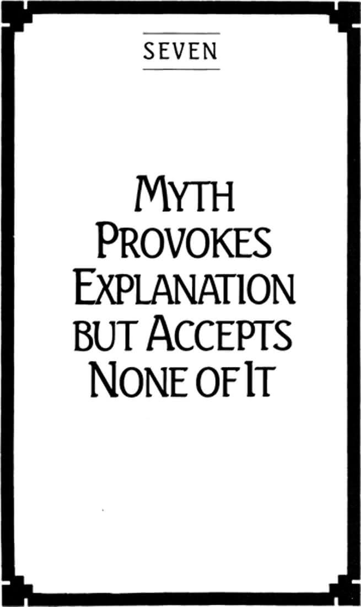

Chapter Seven: Myth Provokes Explanation but Accepts None of It

94
MYTH PROVOKES Explanation but accepts none of it. Where explanation absorbs the unspeakable into the speakable, myth reintroduces the silence that makes original discourse possible.
Explanations establish islands, even continents, of order and predictability. But these regions were first charted by adventurers whose lives are narratives of exploration and risk. They found them only by mythic journeys into the wayless open. When the less adventuresome settlers arrive later to work out the details and domesticate these spaces, they easily lose the sense that all this firm knowledge does not expunge myth, but floats in it.
Few discoveries were greater than Copernicus’, for they projected an order into the heavens that no one has successfully challenged. Many thought then, and some still think, that this great statement of truth dispelled clouds of myth that had kept humankind in retarding darkness. What Copernicus dispelled, however, were not myths but other explanations. Myths lie elsewhere. To see where, we do not look at the facts in Copernicus’ works; we look for the story in his stating them. Knowledge is what successful explanation has led to; the thinking that sent us forth, however, is pure story.
Copernicus was a traveler who went with a hundred pairs of eyes, daring to look again at all that is familiar in the hope of vision. What we hear in this account is the ancient saga of the solitary wanderer, the peregrinus, who risks anything for the sake of surprise. True, at a certain point he stopped to look and may have ended his journey as a Master Player setting down bounded fact. But what resounds most deeply in the life of Copernicus is the journey that made knowledge possible and not the knowledge that made the journey successful.
That myth does not accept the explanations it provokes we can see in the boldness with which thinkers in any territorial endeavor reexamine the familiar for a higher seeing. Indeed, the very liveliness of a culture is determined not by how frequently these thinkers discover new continents of knowledge but by how frequently they depart to seek them.
A culture can be no stronger than its strongest myths.
95
A story attains the status of myth when it is retold, and persistently retold, solely for its own sake.
If I tell a story as a way of bracing up an argument or amusing an audience, I am not telling it for its own sake. To tell a story for its own sake is to tell it for no other reason than that it is a story. Great stories have this feature: To listen to them and learn them is to become their narrators.
Our first response to hearing a story is the desire to tell it ourselves—the greater the story the greater the desire. We will go to considerable time and inconvenience to arrange a situation for its retelling. It is as though the story is itself seeking the occasion for its recurrence, making use of us as its agents. We do not go out searching for stories for ourselves; it is rather the stories that have found us for themselves.
Great stories cannot be observed, any more than an infinite game can have an audience. Once I hear the story I enter into its own dimensionality. I inhabit its space at its time. I do not therefore understand the story in terms of my experience, but my experience in terms of the story. Stories that have the enduring strength of myths reach through experience to touch the genius in each of us. But experience is the result of this generative touch, not its cause. So far is this the case that we can even say that if we cannot tell a story about what happened to us, nothing has happened to us.
It was not Freud’s theory of the unconscious that led him to Oedipus, but the myth of Oedipus that shaped the way he listened to his patients. “The theory of instincts,” he wrote, “is so to say our mythology.” So too, then, the theory of the unconscious that follows from it, and the superego, and the ego. This is a mythology of such poetic strength that it has altered not only the way we understand our experience, but our experience itself. Who of us has not known a crisis of ego, the disturbing presence of unwanted feelings, or the anxious recoil from a more polymorphously embodied sexuality? These experiences are not described by Freud the dispassionate scientist; they are made possible by Freud the mythic dreamer.
As myths make individual experience possible, they also make collective experience possible. Whole civilizations rise from stories—and can rise from nothing else. It is not the historical experience of Jews that makes the Torah meaningful. The Torah is no more a description of the creation of the earth and early Jewish life than the theory of instincts is a description of the psyches of a handful of bourgeois Viennese of the early twentieth century. The Torah is not the story of the Jews; it is what makes Judaism a story.
We tell myths for their own sake, because they are stories that insist on being stories—and insist on being told. We come to life at their touch.
However seriously we might regard them as so much inert poiema, and attach metaphysical meanings to them, they spring back out of their own vitality. When we look into a story to find its meaning, it is always a meaning we have brought with us to look at.
Myths are like magic trees in the garden of culture. They do not grow on but out of the silent earth of nature. The more we strip these trees of their fruit or prune them back to our favored design, the more imposing and fecund they become.
Myths, told for their own sake, are not stories that have meanings, but stories that give meanings.
96
Storytellers become metaphysicians, or ideologists, when they come to believe they know the entire story of a people. This is history theatricalized, with the beginning and end in plain sight. A psychoanalyst who looks for the Freudian myth in patients imposes a filter that lets through nothing the psychoanalyst was not prepared to find.
The psychotherapeutic relationship will become horizonal only when both patient and therapist realize that the Freudian myth does not determine the meaning of what happens between them, but offers the possibility that their relationship will have a story of its own.
The Freudian myth does not therefore repeat itself in their relationship, but resonates in it. Those Jews who claim the right to certain territories on the basis of a biblical promise, those Christians who believe the Russians are the great evil armies foreseen in biblical prophecies of the end of the world, repeat the bible but do not resonate with it.
We resonate with myth when it resounds in us. A myth resounds in me when its voice is heard in mine but not heard as mine. I do not resonate when I quote Jeremiah or when I speak as Jeremiah, but only when Jeremiah speaks in a way that touches an original voice in me. The speech of New Yorkers resonates not because they talk like New Yorkers, but because when they talk we hear New York in their voice.
The resonance of myth collapses the apparent distinction between the story told by one person to another and the story of their telling and listening. It is one thing for you to tell me the story of Muhammad; it is quite another for me to tell the story of your telling me about Muhammad. Ordinarily we confine the story to the words of the speaker. But in doing so we treat it as a story quoted, not a story told. In your relating, and not repeating, the story of Muhammad, I am touched, and I respond from my genius. Something has begun. But in touching, you are also touched. Something has begun between us. Our relationship has opened forward dramatically. Since this drama emerged from the telling of the story of Muhammad, our story resonates with Muhammad’s, and Muhammad’s with ours.
As myths are told, and continue to resound in the telling, they come to us already richly resonant. The stories they are sound deeply with the stories of their telling. Their strength as stories lies in their ability to invite us into their drama. It is a drama that contains an entire history of voices, sounding and resounding from a thousand sources in our culture. For this reason myths are significantly unresolved—but unresolved in the way of an infinite game, having rules, or narrative structure, that allow any number of participants at any time to enter the drama without fixing its plot or bringing it to closure in a final scene. In such stories much will be said about closure, or death, but their telling will always disclose the way death comes in the course of play and not at its end.
97
Myths of irrepressible resonance have lost all trace of an author. Even when sacred texts are written down by an identifiable prophet or evangelist, it is invariably thought that these words were first spoken to their recorders and not spoken by them. Moses received the law and did not compose it. Muhammad heard the Quran and did not dictate it. Christians do not read Mark but the gospel according to Mark. Hindus understand their most authoritative texts, the Vedas, to be heard (sruti), and the literature that derives from the Vedas to be composed (smriti).
The gospel can be heard nowhere except from those who themselves have heard it. Although I might hear New York in your voice, there is no possibility I could hear New York by itself. No myth, therefore, exists by itself; neither does it have a discoverable origin. Whom could we name as the first New Yorker? Even when it is God who is heard by the prophet, it is a god who speaks in the language and idiom of the prophet, and not in locutions restricted to divine utterance—as though that god’s speaking were itself a form of listening.
Indeed, myth is the highest form of our listening to each other, of offering a silence that makes the speech of the other possible. This is why listening is far more valued by religion than speaking. Fides ex auditu. Faith comes by listening, Paul said.
98
The opposite of resonance is amplification. A choir is the unified expression of voices resonating with each other; a loudspeaker is the amplification of a single voice, excluding all others. A bell resonates, a cannon amplifies. We listen to the bell, we are silenced by the cannon.
When a single voice is sufficiently amplified, it becomes a speaking that makes it impossible for any other voices to be heard. We do not listen to a loudspeaker for what is being said, but only because it is all that is being said. Magisterial speech is amplified speech; it is speech that silences. Loud-speaking is a mode of command, and therefore a speech designed to bring itself to an end as completely and swiftly as possible. The amplified voice seeks obedient action on the part of its hearers and an immediate end to their speech. There is no possibility of conversation with a loudspeaker.
Ideology is the amplification of myth. It is the assumption that since the beginning and end of history are known there is nothing more to say. History is therefore to be obediently lived out according to the ideology. Just as the warmakers of Europe regularly melted down the bells to recast them into cannon, the metaphysicians have found the meaning of their myths and announced those meanings without their narrative resonance. The myths themselves are now regarded as falsehoods or curiosities, and are therefore to be disregarded, if not forbidden.
What ideologists are concerned to hide is the choral nature of history, the sense that it is a symphony of very different, even opposed, voices, each nonetheless making the other possible.
99
If it is true that myth provokes explanation, then it is also true that explanation’s ultimate design is to eliminate myth. It is not just that the availability of bells in churches and town halls of Europe makes it possible to forge new cannon; it is that the cannon are forged in order to silence the bells. This is the contradiction of finite play in its highest form: to play in such a way that all need for play is erased.
The loudspeaker, successfully muting all other voices and therefore all possibility of conversation, is not listened to at all, and for that reason loses its own voice and becomes mere noise. Whenever we succeed in being the only speaker, there is no speaker at all. Julius Caesar originally sought power in Rome because he loved to play the very dangerous style of politics common to the Republic; but he played the game so well that he destroyed all his opponents, making it impossible for him to find genuinely dangerous combat. He was unable to do the very thing for which he sought power. His word was now irresistible, and for that reason he could speak with no one, and his isolation was complete. “We might almost say this man was looking for an assassination” (Syme).
If we are to say that all explanation is meant to silence myth itself, then it will follow that whenever we find people deeply committed to explanation and ideology, whenever play takes on the seriousness of warfare, we will find persons troubled by myths they cannot forget they have forgotten. The myths that cannot be forgotten are those so resonant with the paradox of silence they become the source of our thinking, even our culture, and our civilization.
These are the myths we can easily discover and name, but whose meanings continually elude us, myths whose conversion to truth never quite fills the bells of their resonance with the sand of metaphysical interpretation. These are often exceedingly simple stories. Abraham is an example. Although only two children were born to Abraham in his long life, and one of those was illegitimate, he was promised that his descendents would be as numberless as the stars of the heavens. All three of the West’s major religions consider themselves children of Abraham, though each has often understood to be itself the only and final family of the patriarch, an understanding always threatened by the resounding phrase: numbered as the stars of the heavens. This is the myth of a future that always has a future; there is no closure in it. It is a myth of horizon.
The myth of the Buddha’s enlightenment has the same paradox in it, the same provocation to explanation but with as little possibility of settling the matter. It is the story of a mere mortal, completely without divine aid, undertaking successfully a spiritual quest for release from all forms of bondage, including the need to report this release to others. The perfect unspeakability of this event has given rise to an immense flow of literature in scores of languages that shows no signs of abating.
Perhaps the Christian myth has been the narrative most disturbing to the ideological mind. It is, like those of Abraham and the Buddha, a very simple tale: that of a god who listens by becoming one of us. It is a god “emptied” of divinity, who gave up all privilege of commanding speech and “dwelt among us,” coming “not to be served, but to serve,” “being all things to all persons.” But the worlds to which he came received him not. They no doubt preferred a god of magisterial utterance, a commanding idol, a theatrical likeness of their own finite designs. They did not expect an infinite listener who joyously took their unlikeness on himself, giving them their own voice through the silence of wonder, a healing and holy metaphor that leaves everything still to be said.
Those Christians who deafened themselves to the resonance of their own myth have driven their killing machines through the garden of history, but they did not kill the myth. The emptied divinity whom they have made into an Instrument of Vengeance continues to return as the Man of Sorrows bringing with him his unfinished story, and restoring the voices of the silenced.
100
The myth of Jesus is exemplary, but not necessary. No myth is necessary. There is no story that must be told. Stories do not have a truth that someone needs to reveal, or someone needs to hear. It is part of the myth of Jesus that it makes itself unnecessary; it is a narrative of the word becoming flesh, of language entering history; a narrative of the word becoming flesh and dying, of history entering language. Who listens to his myth cannot rise above history to utter timeless truths about it.
It is not necessary for infinite players to be Christians; indeed it is not possible for them to be Christians—seriously. Neither is it possible for them to be Buddhists, or Muslims, or atheists, or New Yorkers—seriously. All such titles can only be playful abstractions, mere performances for the sake of laughter.
Infinite players are not serious actors in any story, but the joyful poets of a story that continues to originate what they cannot finish.